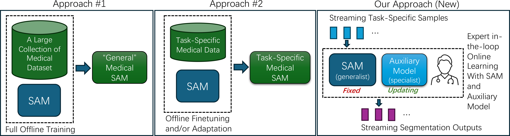
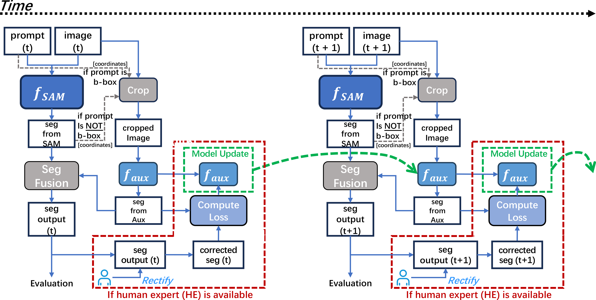
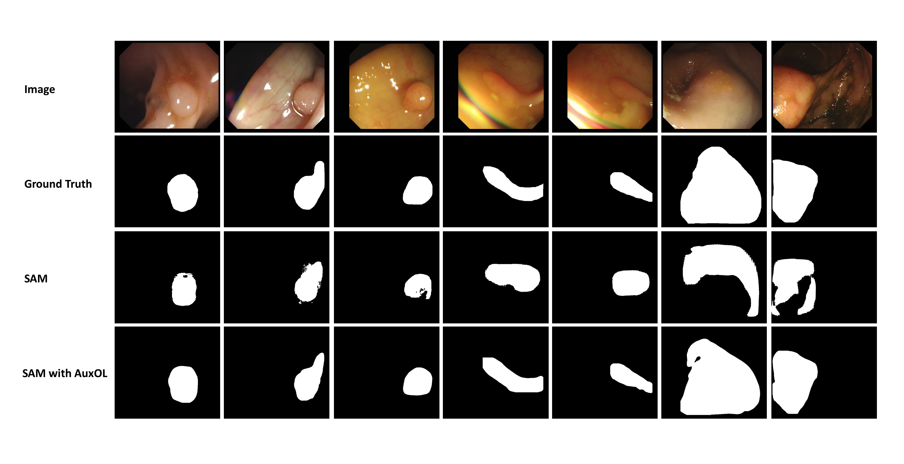
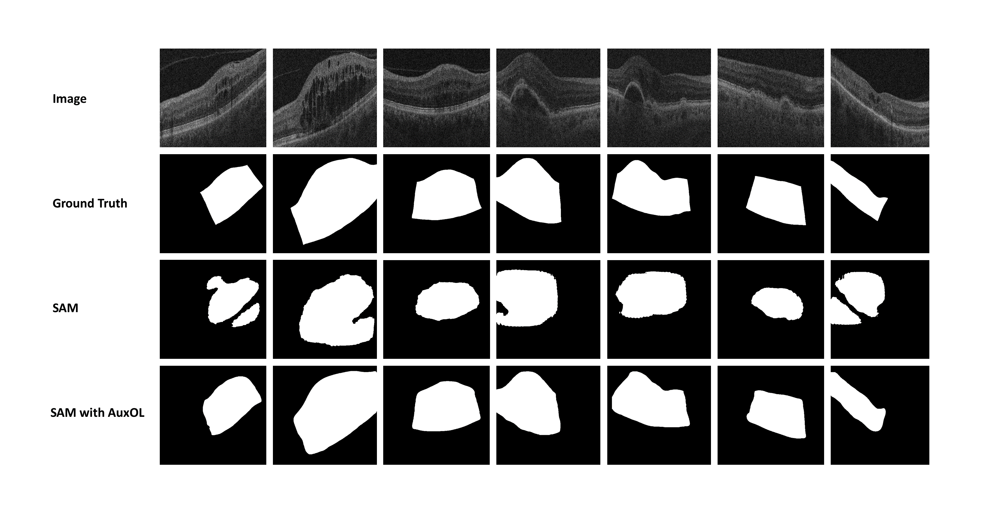
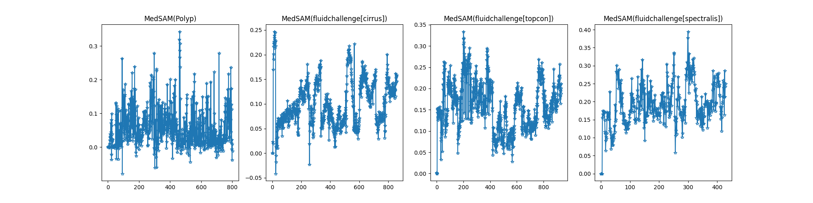
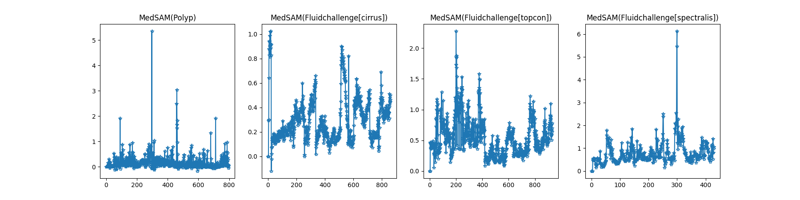

The current variants of the Segment Anything Model (SAM), which include the original SAM and Medical SAM, still lack the capability to produce sufficiently accurate segmentation for medical images. In medical imaging contexts, it is not uncommon for human experts to rectify segmentations of specific test samples after SAM generates its segmentation predictions. These rectifications typically entail manual or semi-manual corrections employing state-of-the-art annotation tools. Motivated by this process, we introduce a novel approach that leverages the advantages of online machine learning to enhance Segment Anything (SA) during test time. We employ rectified annotations to perform online learning, with the aim of improving the segmentation quality of SA on medical images. To improve the effectiveness and efficiency of online learning when integrated with large-scale vision models like SAM, we propose a new method called Auxiliary Online Learning (AuxOL). AuxOL creates and applies a small auxiliary model (specialist) in conjunction with SAM (generalist), entails adaptive online-batch and adaptive segmentation fusion. Experiments conducted on eight datasets covering four medical imaging modalities validate the effectiveness of the proposed method. Our work proposes and validates a new, practical, and effective approach for enhancing SA on downstream segmentation tasks (e.g., medical image segmentation).






@article{huang2024improving,
title={Improving Segment Anything on the Fly: Auxiliary Online Learning and Adaptive Fusion for Medical Image Segmentation},
author={Huang, Tianyu and Zhou, Tao and Xie, Weidi and Wang, Shuo and Dou, Qi and Zhang, Yizhe},
journal={arXiv preprint arXiv:2406.00956},
year={2024}
}